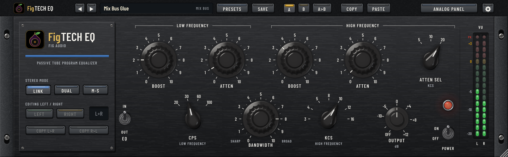
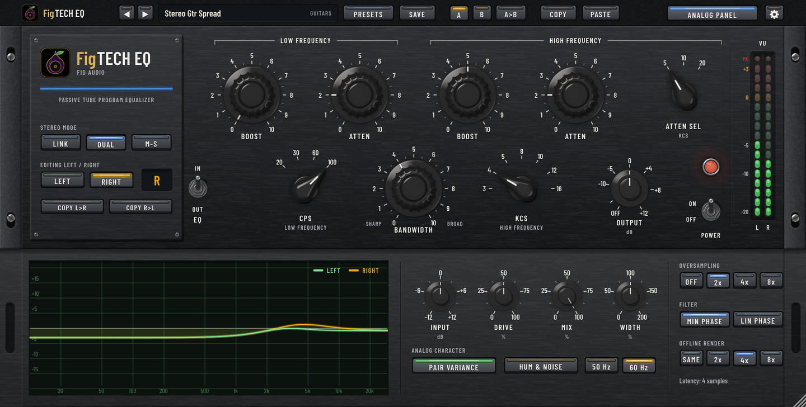
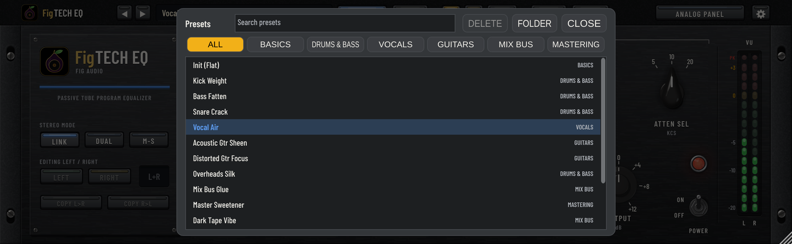

Two tube EQs,
racked as a pair.
FigTECH EQ is a stereo program equalizer inspired by classic 1960s passive tube program EQs. The passive network is modelled part by part, then a tube makeup stage and input and output transformers bring back the level and add the colour. Two complete units share one window: link them, run left and right apart, or split mid and side.
Mac (Apple Silicon and Intel) and Windows · AU, VST3, CLAP and standalone app

The controls you know
The same layout as the classic units, with the same broad, musical curves. Hover over any dial to see its setting and what it does in dB.
Boost and atten
Pick 20, 30, 60 or 100 Hz with CPS. LOW BOOST lifts a broad shelf by up to +14 dB, LOW ATTEN cuts by up to 19 dB, and you can use both at once.
High boost
A bell at 3, 4, 5, 8, 10, 12 or 16 kHz with BANDWIDTH from sharp to broad. Full boost reaches +17 dB sharp and a gentle +9 dB broad, the silky top the classic units are loved for.
High atten
A separate shelf that rolls off the top from 5, 10 or 20 kHz. It's its own circuit, so you can lift the air and tame the fizz at the same time.
Tubes and transformers
EQ OUT takes the network out but leaves the tubes and transformers in circuit, as on the hardware. Push them and the tubes add mostly second harmonic while the transformers thicken the lows.
Output and VU
OUTPUT from OFF to +12 dB to match levels after a boost. VU meters calibrated so 0 VU is -18 dBFS, with a peak light that catches anything near 0 dBFS.
EQ in/out and power
EQ IN/OUT on each unit, and POWER OFF for a true bypass that stays in time with the rest of your session.
The low-end trick, built in
On most equalizers, boosting and cutting the same frequency cancel out. Here they don't: the LOW ATTEN shelf turns over higher than the LOW BOOST shelf. Turn both up at the same CPS and the deep lows get bigger while the boxy low mids clear out. It's the move these equalizers are famous for on kick drums, bass and whole mixes.
LOW BOOST and LOW ATTEN at the same setting
| CPS | Both at 5 | Both at 10 |
|---|---|---|
| 30 Hz | +7.5 dB lows, -4.4 dB at 490 Hz | +15 dB lows, -7.7 dB at 370 Hz |
| 60 Hz | +7.6 dB lows, -4.3 dB at 1 kHz | +15 dB lows, -7.6 dB at 780 Hz |
| 100 Hz | +7.6 dB lows, -4.3 dB at 1.7 kHz | +15 dB lows, -7.5 dB at 1.3 kHz |
Link, Dual or Mid-Side
Every control exists twice, once for each unit. The keys on the brand plate decide how the pair is used, and switching fades so it never clicks.
LINK
One set of controls for both channels. Each channel still has its own circuit, so the two sides saturate on their own, as two hardware units would.
DUAL
Unit A on the left, unit B on the right, each with its own settings. Made for doubled guitars, stereo pairs and fixing a lopsided mix.
M-S
Unit A on the mid and unit B on the side. Add weight to the centre and air to the edges of a master, then decode back to left and right.
COPY L>R and COPY R>L copy one unit's settings to the other, and on a mono track FigTECH EQ runs as one unit.
The analog panel
Open ANALOG PANEL for the response curve and the controls the original panel never had.

Input and Drive
INPUT sets the level into the units. DRIVE sets how hard the hardware works and scales the output back by the same amount, so it changes the colour, not the level.
Mix and Width
MIX blends in the dry signal, kept in time and in phase so it never sounds hollow. WIDTH runs from mono to twice the side signal.
Pair variance and hum
PAIR VARIANCE gives each channel its own small component tolerances and tube match, like two real units. HUM & NOISE adds the hardware's faint mains hum and hiss, at 50 or 60 Hz, if you want it.
Oversampling
Off, 2x, 4x or 8x while playing, with minimum or linear phase filters, and its own setting for offline bounces.
Made for real sessions
- 15 factory presets for drums, bass, vocals, guitars, the mix bus and mastering, from Kick Weight to M/S Master Air, plus your own presets in folders.
- A/B compare, with each slot keeping its own edits.
- Copy and paste settings between instances, sessions and computers.
- Unity gain when flat, so with every boost and cut at 0 the level through the unit doesn't change.
- A resizable window, from 75% to 200%, that remembers its size.
- Works in your DAW as an Audio Unit, VST3 or CLAP plugin, or on its own as a standalone app.

Get FigTECH EQ
One-time purchase. Yours to keep.
Mac
macOS 12 or later, Apple Silicon or Intel. Audio Unit, VST3, CLAP and standalone app, from a signed and notarized installer that lets you pick the formats.
Windows
Windows 10 or 11, 64-bit. VST3, CLAP and standalone app.
Licence
Activate on your own computers with your Fig Pro Audio account, the same one FigAMP, FigGutEQ and FigSTRIP use, online or offline. One licence covers Mac and Windows. The trial is fully featured for 14 days.